从历史回看，到日常记录。功能已接入现有网页的「用车研究」。这里全部为合成数据截图，点击图片可看完整页面。
本地实现与测试已完成，尚未部署。预览费用、里程、照片和事件均不代表真实车辆。
查看导出的行程卡片 · 交付与验收说明
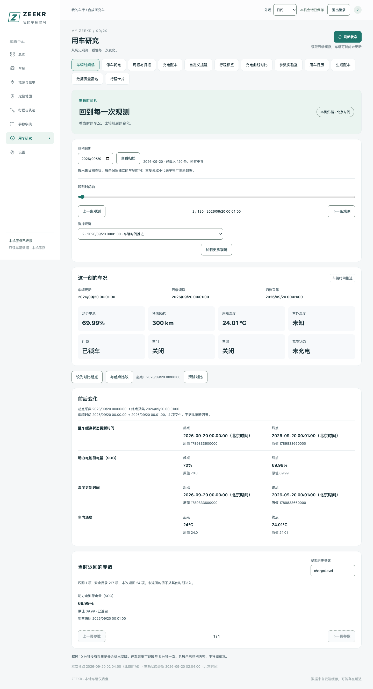
拖动时间轴，回看历史状态；挑两条观测看变化。
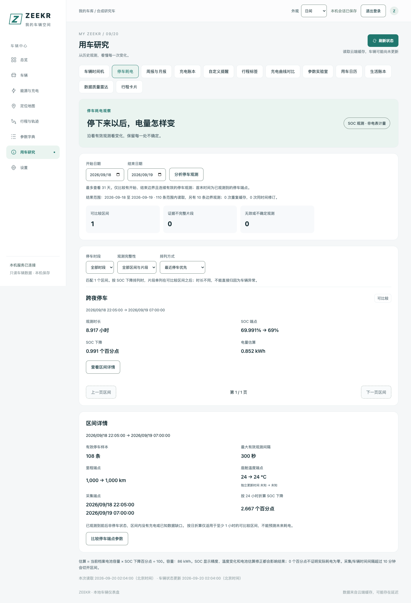
查看一晚静置的 SOC 变化、温度和样本间隔；不完整区间单独标注。
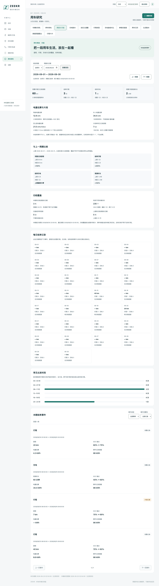
里程、充电、活动日期和上期对比，完整记录与观测片段分开统计。
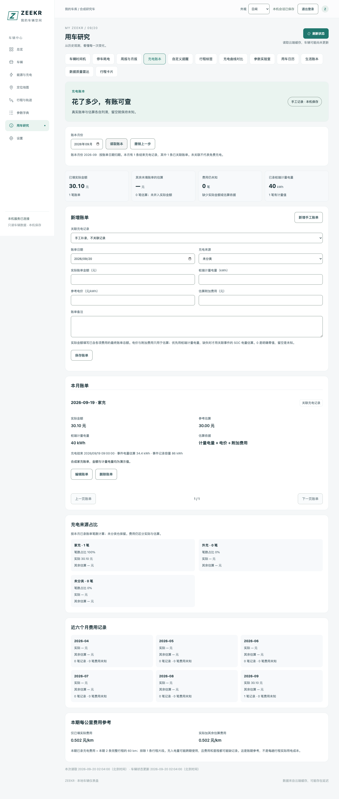
关联充电记录，补录实际费用、桩端电量与电价；实际值和估算分列。
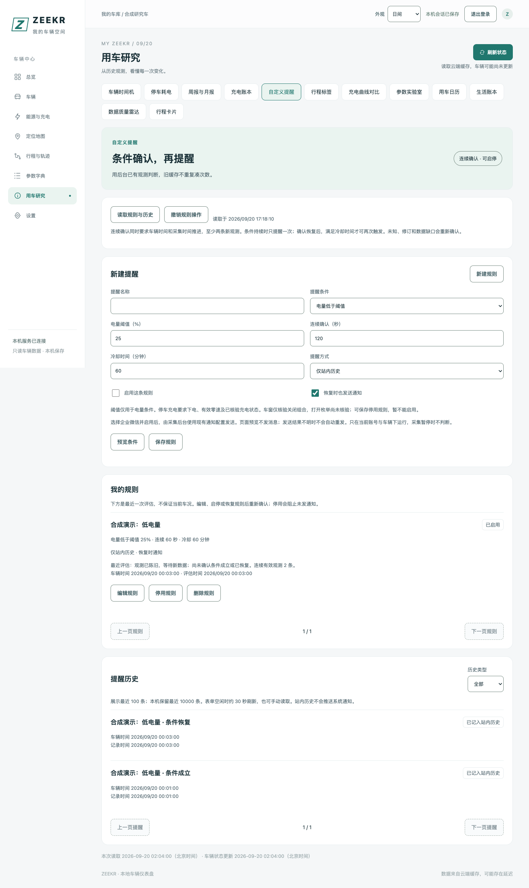
电量条件、连续确认、冷却与恢复，附规则预览和提醒历史。
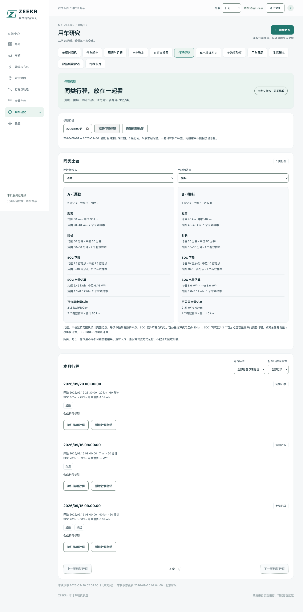
为行程添加通勤、接娃等标签；对照同类距离、时长和 SOC 变化。
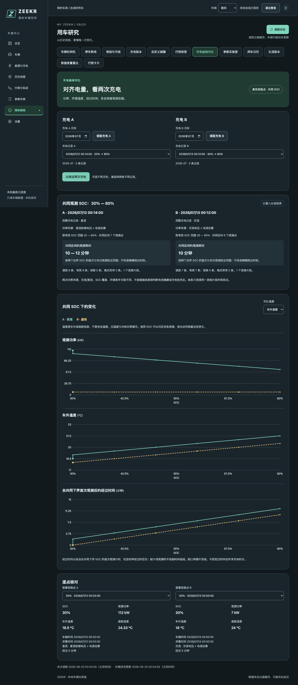
共同 SOC 区间对照功率、温度和耗时；保留缺口与平台时间的不确定性。
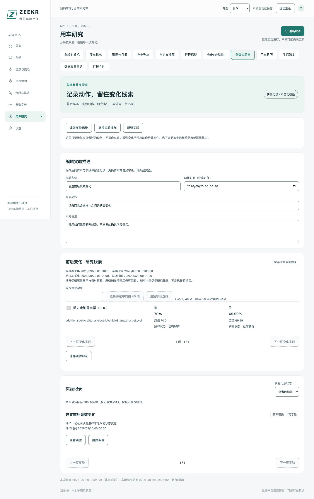
保存动作、前后样本和变化字段；研究线索保留原始摘录，不自动确认语义。
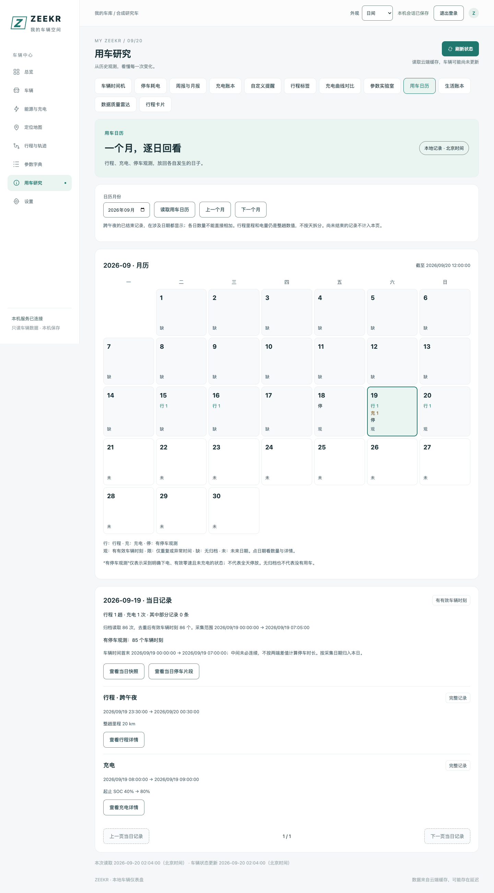
逐日查看行程、充电和停车观测；跨午夜、缺数据与未来日期清楚区分。
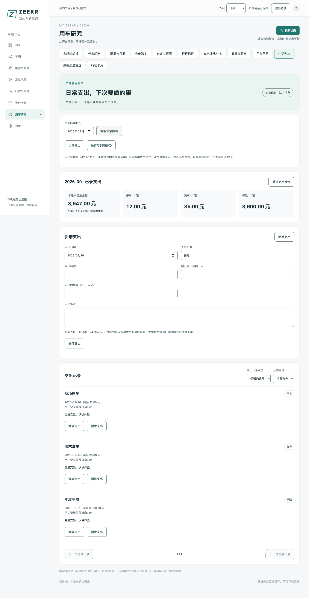
记录保险、停车、洗车等支出；另有日期或里程到期的保养待办。
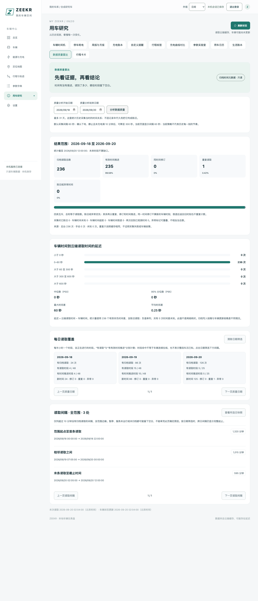
查看读取延迟、新时间、修订、重复和缺口；覆盖统计不冒充车辆在线率。
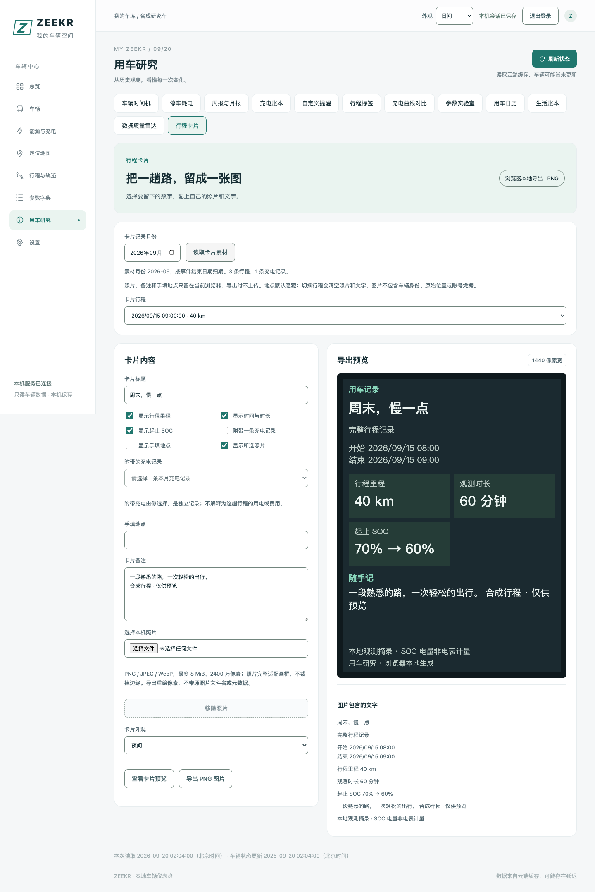
选择行程、照片和备注，在浏览器内导出 PNG；地点默认隐藏。